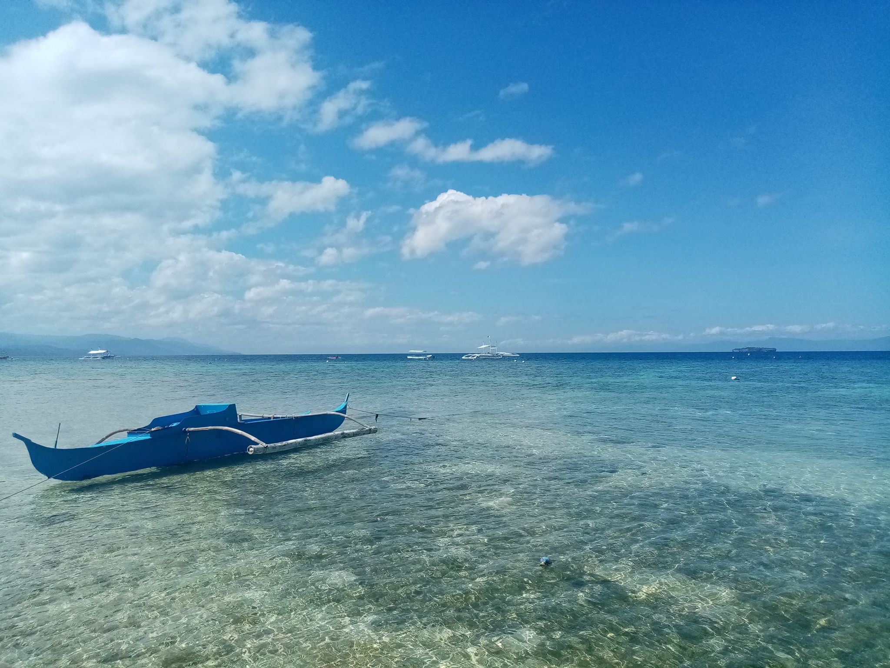
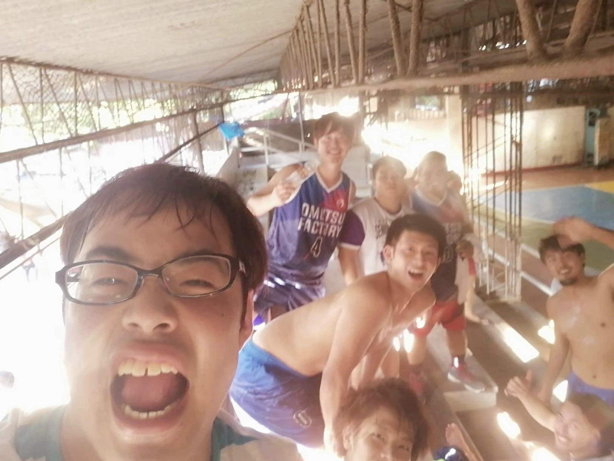

私たちが生まれたのは400兆分の1の確率
非日常の経験、ゴールドエクスペリエンスをしてみませんか？
活動内容
新拠点開拓チーム
陸、海、空、あらゆる手段を駆使し、各場所に拠点を築くチーム。
厳しい話をするが、任務遂行のためならチームメンバーの生死は問わない「超成果主義型組織」。行く先々で多くの困難が待ち受けているが、これまでの経験や個々の能力を活かして前に進む姿はまるでジョジョの奇妙な冒険のようだ。
第一部はセブ島編、第二部は日本編、第三部はお楽しみに。
バスケットボールチーム
チーム名はオムツファクトリー。常に初心を忘れないという意味を込めて命名され、メンバーは行く宛て無くセブ島を彷徨い、義務教育放棄したゴロツキどもの寄せ集め。
1勝8負と立ち上がりはレブロンが抜けたキャブズのようだが、これまでの経験や個々の能力を活かして前に進む姿はまるでジョジョの奇妙な冒険のようだ。
宇宙開拓チーム
ボスを探して陸、海、空を歩み続けていたら道に迷って宇宙に到達してしまったので、拠点開拓を進める1人チーム。
その後宇宙を様良い、後に彼が全知全能の神、アツ汁スペース大明神になるということは私しか知らない。
これまでの経験や個々の能力を活かして前に進む姿はまるでジョジョの奇妙な冒険のようだ。